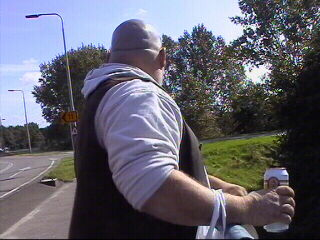
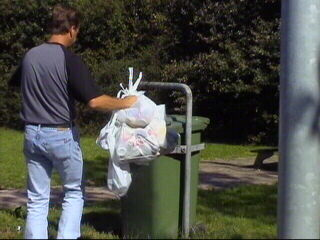
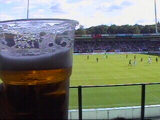
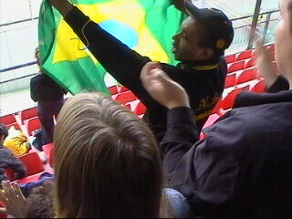

|
NEC - Roda JC (2-4) 15 september 2002 |

Wachten op de bus bij het Ei van Sint Joost.
Prachtig weer dus het bier vloeide rijkelijk.

De lege verpakkingen werden netjes opgeruimd.
Aankomst in Alcatraz.

De Goffert krijgt een pluspunt voor de verkoop
van bier maar een minpunt voor de smaak ervan.
Roda speelt bijna voortdurend in het eigen
strafschopgebied en krijgt de bal daar maar niet
weg. NEC krijgt kans op kans en in de 19e min.
scoort Dennis De Nooijer een fraai doelpunt.
In de 42e min. scoort Soetaers keihard tegen na
een voorzet van Sonko.
Maar in de 45e min. scoort Hersi 2-1.
Kujovic vraagt zich af waar hij zoveel ellende
aan te danken heeft.
Youssouf springt ondertussen een gat in de lucht.
Op de linker lange zijde wordt een gigantisch
doek over het publiek getrokken.
In de tweede helft zien we een totaal ander Roda.
Hier gaat Cristiano de gelijkmaker scoren (55').
Uitzinnige vreugde en supersfeer in het Roda-vak.
Met de komst van Sonko voor Van Mieghem
(37') werd Roda een stuk gevaarlijker.

Het Brasiiiiiil, jalalalalalalalaaaaa werd kracht
bijgezet met diverse Braziliaanse vlaggen.
Hier gaat Cristiano de uitstekend keepende
Gentenaar voor de tweede keer passeren (62').
Feest!
De NEC-spelers raken geïrriteerd en er ontstaat
een enorme opstoot.
Links van het Roda-vak.
Smile.....cause you're on Candid Camera!
Smerige overtreding van Govedarica op Sergio.
Discutabel buitenspeldoelpunt van Roda.
Soetaers beslist de wedstrijd in de 89e minuut
definitief, 2-4.
Het NEC-publiek verlaat nu massaal het stadion.
De zeer blijde Cristiano die het scanderen van
zijn naam door de Roda-supporters wel weet te
waarderen.
Dat we dit nog maar vaak mogen zien.
© Koempels
Pleasure Dome